SDR × 手持無線電 1/54
把選單上的數字 變成看得見的電波
- 進階無線電 · 瀑布圖實戰課程
- 用一台 RTL-SDR，把頻率、功率、頻寬、亞音一個一個指給學員看
COURSE ROADMAP 2/54
今天的九段路 ＋ 三段實作 ＋ 一個任務
SESSION 1 3/54
頻譜 Spectrum & 瀑布圖 The Waterfall
- 先學會讀這張圖——它是後面每一段共用的工具
- 破除迷思
- 「看到訊號，就是有人在發」 → 有些是接收機自己生的假訊號
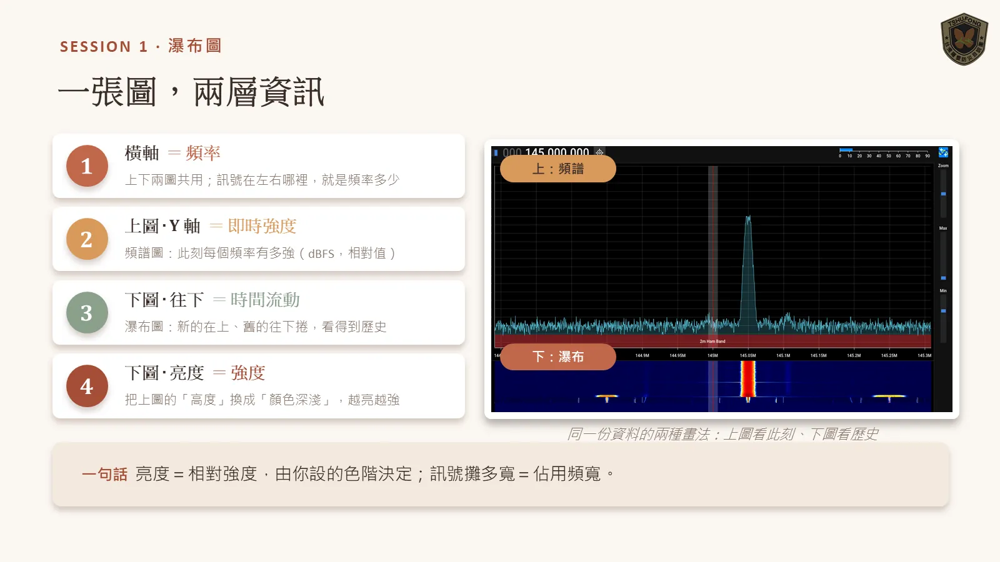
SESSION 1 · 瀑布圖 4/54
一張圖，兩層資訊
- 橫軸 ＝ 頻率
- 1
- 上：頻譜
- 上下兩圖共用；訊號在左右哪裡，就是頻率多少
- 上圖 · Y 軸 ＝ 即時強度
- 2
- 頻譜圖：此刻每個頻率有多強（dBFS，相對值）
- 下圖 · 往下 ＝ 時間流動
- 3
- 瀑布圖：新的在上、舊的往下捲，看得到歷史
- 下：瀑布
- 下圖 · 亮度 ＝ 強度
- 4
- 把上圖的「高度」換成「顏色深淺」，越亮越強
- 同一份資料的兩種畫法：上圖看此刻、下圖看歷史
- 一句話 亮度＝相對強度，由你設的色階決定；訊號攤多寬＝佔用頻寬。
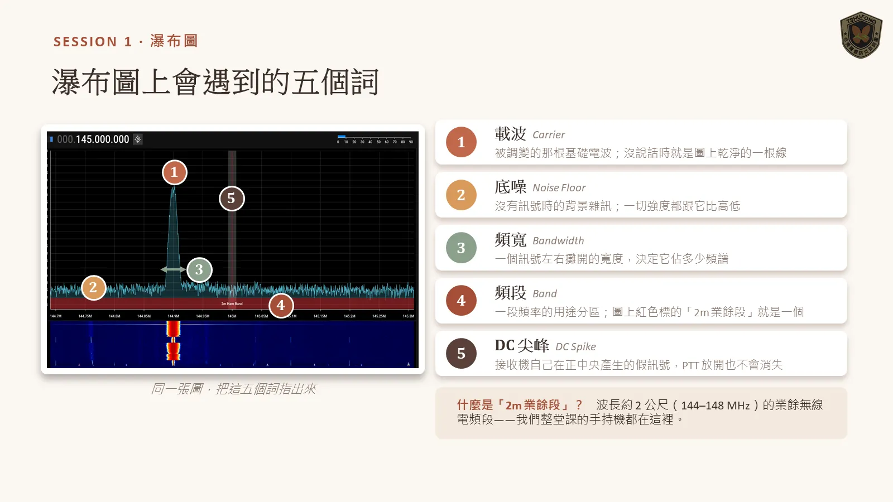
SESSION 1 · 瀑布圖 5/54
瀑布圖上會遇到的五個詞
- 載波 Carrier
- 1
- 被調變的那根基礎電波；沒說話時就是圖上乾淨的一根線
- 1
- 底噪 Noise Floor
- 2
- 5
- 沒有訊號時的背景雜訊；一切強度都跟它比高低
- 頻寬 Bandwidth
- 3
- 一個訊號左右攤開的寬度，決定它佔多少頻譜
- 3
- 2
- 頻段 Band
- 4
- 4
- 一段頻率的用途分區；圖上紅色標的「2m 業餘段」就是一個
- DC 尖峰 DC Spike
- 5
- 接收機自己在正中央產生的假訊號，PTT 放開也不會消失
- 同一張圖，把這五個詞指出來
- 什麼是「2m 業餘段」？ 波長約 2 公尺（144–148 MHz）的業餘無線電頻段——我們整堂課的手持機都在這裡。
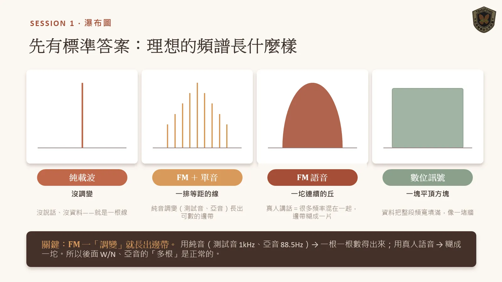
SESSION 1 · 瀑布圖 6/54
先有標準答案：理想的頻譜長什麼樣
- 純載波
- FM ＋ 單音
- FM 語音
- 數位訊號
- 沒調變
- 一排等距的線
- 一坨連續的丘
- 一塊平頂方塊
- 沒說話、沒資料——就是一根線
- 純音調變（測試音、亞音）長出可數的邊帶
- 真人講話＝很多頻率混在一起，邊帶糊成一片
- 資料把整段頻寬填滿，像一堵牆
- 關鍵：FM 一「調變」就長出邊帶。 用純音（測試音 1kHz、亞音 88.5Hz）→ 一根一根數得出來；用真人語音 → 糊成一坨。所以後面 W/N、亞音的「多根」是正常的。
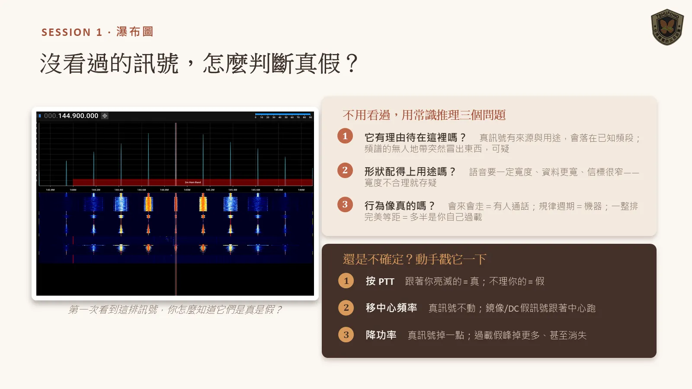
SESSION 1 · 瀑布圖 7/54
沒看過的訊號，怎麼判斷真假？
- 不用看過，用常識推理三個問題
- 它有理由待在這裡嗎？ 真訊號有來源與用途，會落在已知頻段；頻譜的無人地帶突然冒出東西，可疑
- 1
- 形狀配得上用途嗎？ 語音要一定寬度、資料更寬、信標很窄——寬度不合理就存疑
- 2
- 行為像真的嗎？ 會來會走＝有人通話；規律週期＝機器；一整排完美等距＝多半是你自己過載
- 3
- 還是不確定？動手戳它一下
- 按 PTT 跟著你亮滅的 = 真；不理你的 = 假
- 1
- 移中心頻率 真訊號不動；鏡像/DC 假訊號跟著中心跑
- 2
- 第一次看到這排訊號，你怎麼知道它們是真是假？
- 降功率 真訊號掉一點；過載假峰掉更多、甚至消失
- 3
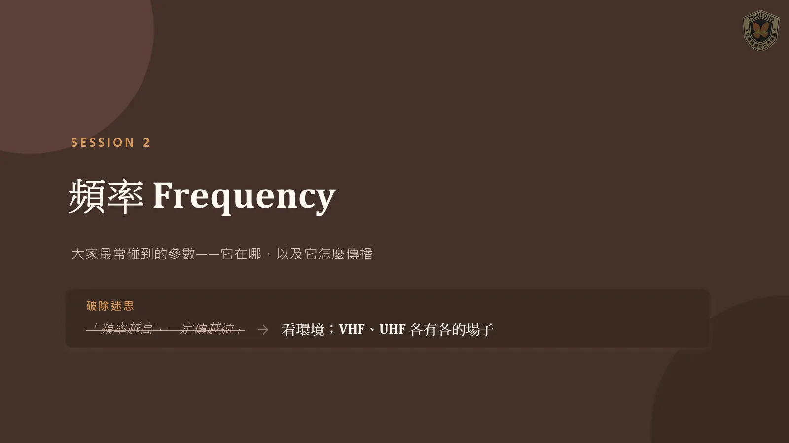
SESSION 2 8/54
頻率 Frequency
- 大家最常碰到的參數——它在哪，以及它怎麼傳播
- 破除迷思
- 「頻率越高，一定傳越遠」 → 看環境；VHF、UHF 各有各的場子
SESSION 2 · 頻率 9/54
為什麼要對頻率？
- ★ 頻率對不上，其他全部免談——這是通訊的第一道門
- 空中同時有無數訊號。你要跟誰通，就得先和對方站到「同一個頻率」上。
- 要解決的問題
- 頻率＝事先約好的碰面地點；雙方對齊，才聽得到彼此。功率、天線都是之後的事。
- 設計原理
- 聽得到卻叫不到 → 先核對頻率與末位數字，比換天線、加功率都優先。
- 現場場景
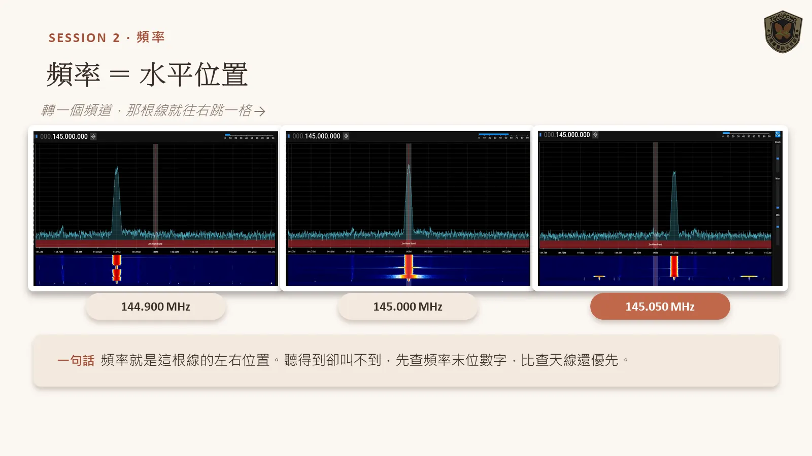
SESSION 2 · 頻率 10/54
頻率 ＝ 水平位置
- 轉一個頻道，那根線就往右跳一格 →
- 144.900 MHz
- 145.000 MHz
- 145.050 MHz
- 一句話 頻率就是這根線的左右位置。聽得到卻叫不到，先查頻率末位數字，比查天線還優先。
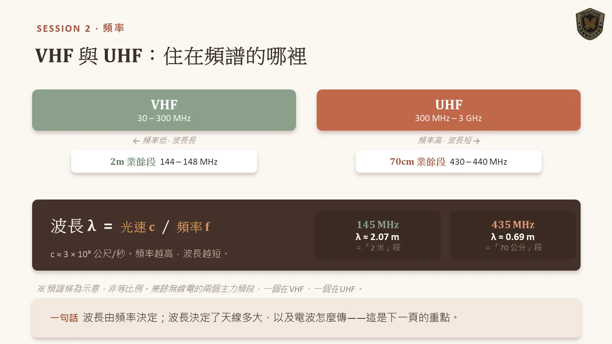
SESSION 2 · 頻率 11/54
VHF 與 UHF：住在頻譜的哪裡
- VHF · 30 – 300 MHz
- UHF · 300 MHz – 3 GHz
- ← 頻率低 · 波長長
- 頻率高 · 波長短 →
- 2m 業餘段 144 – 148 MHz
- 70cm 業餘段 430 – 440 MHz
- 波長 λ = 光速 c ⁄ 頻率 f
- 145 MHz · λ ≈ 2.07 m · ＝「2 米」段
- 435 MHz · λ ≈ 0.69 m · ＝「70 公分」段
- c ≈ 3 × 10⁸ 公尺/秒。頻率越高，波長越短。
- ※ 頻譜條為示意，非等比例。業餘無線電的兩個主力頻段，一個在 VHF、一個在 UHF。
- 一句話 波長由頻率決定；波長決定了天線多大、以及電波怎麼傳——這是下一頁的重點。
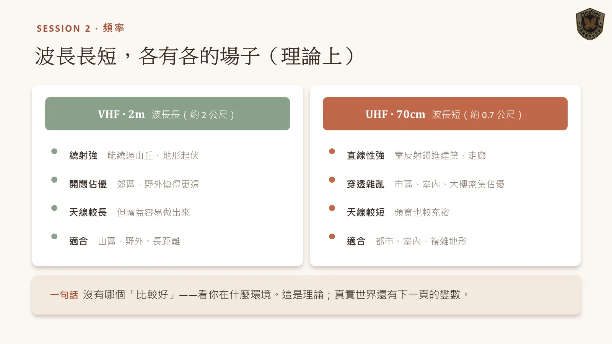
SESSION 2 · 頻率 12/54
波長長短，各有各的場子（理論上）
- VHF · 2m 波長長（約 2 公尺）
- UHF · 70cm 波長短（約 0.7 公尺）
- 繞射強 能繞過山丘、地形起伏
- 直線性強 靠反射鑽進建築、走廊
- 開闊佔優 郊區、野外傳得更遠
- 穿透雜亂 市區、室內、大樓密集佔優
- 天線較長 但增益容易做出來
- 天線較短 頻寬也較充裕
- 適合 山區、野外、長距離
- 適合 都市、室內、複雜地形
- 一句話 沒有哪個「比較好」——看你在什麼環境。這是理論；真實世界還有下一頁的變數。
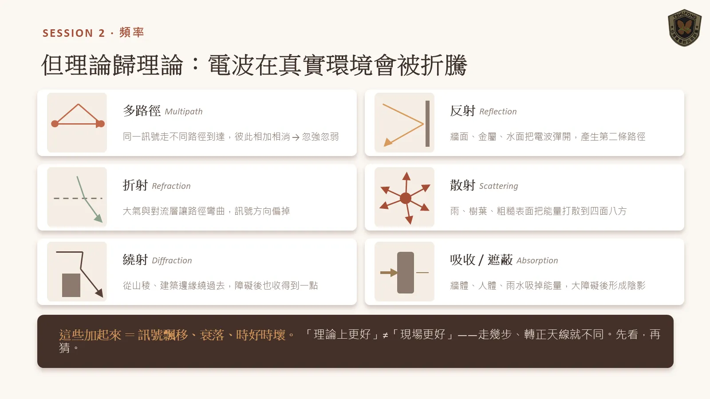
SESSION 2 · 頻率 13/54
但理論歸理論：電波在真實環境會被折騰
- 多路徑 Multipath
- 反射 Reflection
- 同一訊號走不同路徑到達，彼此相加相消 → 忽強忽弱
- 牆面、金屬、水面把電波彈開，產生第二條路徑
- 折射 Refraction
- 散射 Scattering
- 大氣與對流層讓路徑彎曲，訊號方向偏掉
- 雨、樹葉、粗糙表面把能量打散到四面八方
- 繞射 Diffraction
- 吸收 / 遮蔽 Absorption
- 從山稜、建築邊緣繞過去，障礙後也收得到一點
- 牆體、人體、雨水吸掉能量，大障礙後形成陰影
- 這些加起來 ＝ 訊號飄移、衰落、時好時壞。 「理論上更好」≠「現場更好」——走幾步、轉正天線就不同。先看，再猜。
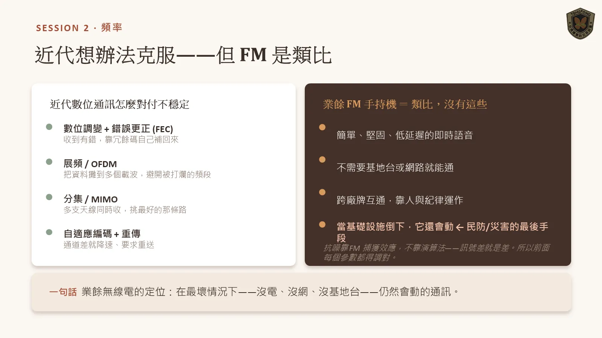
SESSION 2 · 頻率 14/54
近代想辦法克服——但 FM 是類比
- 近代數位通訊怎麼對付不穩定
- 業餘 FM 手持機 ＝ 類比，沒有這些
- 數位調變 + 錯誤更正 (FEC) · 收到有錯，靠冗餘碼自己補回來
- 簡單、堅固、低延遲的即時語音
- 不需要基地台或網路就能通
- 展頻 / OFDM · 把資料攤到多個載波，避開被打爛的頻段
- 跨廠牌互通，靠人與紀律運作
- 分集 / MIMO · 多支天線同時收，挑最好的那條路
- 當基礎設施倒下，它還會動 ← 民防/災害的最後手段
- 自適應編碼 + 重傳 · 通道差就降速、要求重送
- 抗噪靠 FM 捕獲效應，不靠演算法——訊號差就是差。所以前面每個參數都得調對。
- 一句話 業餘無線電的定位：在最壞情況下——沒電、沒網、沒基地台——仍然會動的通訊。
SESSION 3 15/54
發射功率 TX Power
- H / M / L —— 功率大，只是線更亮
- 破除迷思
- 「功率越大越好」 → 夠用就好；大只是更耗電、更燙、干擾更廣
SESSION 3 · 發射功率 16/54
為什麼要有 H / M / L？
- 訊號會隨距離變弱。功率決定你「推得多遠」，但推得越遠，也干擾越廣、越耗電。
- 要解決的問題
- 給你 H / M / L 三段可選，讓你按需要挑——夠用就好，不是越大越好。
- 設計原理
- 近距離用 L：省電、少干擾、機殼不燙；只有邊緣地帶才加到 H。
- 現場場景
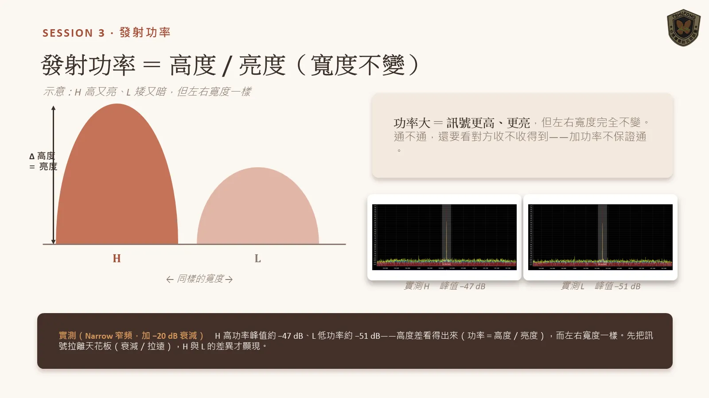
SESSION 3 · 發射功率 17/54
發射功率 ＝ 高度 / 亮度（寬度不變）
- 示意：H 高又亮、L 矮又暗，但左右寬度一樣
- 功率大 ＝ 訊號更高、更亮，但左右寬度完全不變。 · 通不通，還要看對方收不收得到——加功率不保證通。
- Δ 高度 · ＝ 亮度
- H
- L
- ← 同樣的寬度 →
- 實測 H 峰值 −47 dB
- 實測 L 峰值 −51 dB
- 實測（Narrow 窄頻，加 −20 dB 衰減） H 高功率峰值約 −47 dB、L 低功率約 −51 dB——高度差看得出來（功率＝高度／亮度），而左右寬度一樣。先把訊號拉離天花板（衰減／拉遠），H 與 L 的差異才顯現。
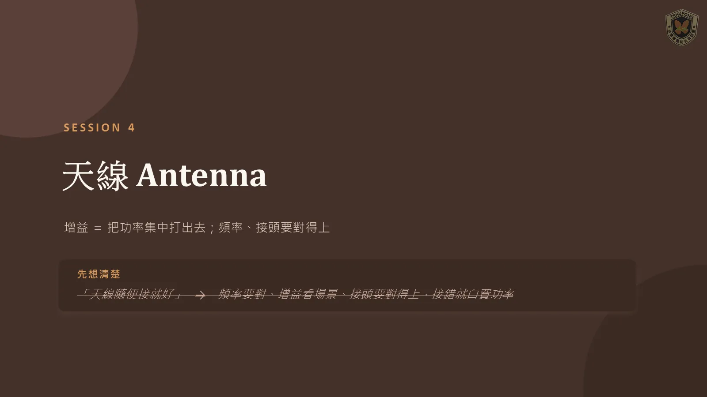
SESSION 4 18/54
天線 Antenna
- 增益 ＝ 把功率集中打出去；頻率、接頭要對得上
- 先想清楚
- 「天線隨便接就好」 → 頻率要對、增益看場景、接頭要對得上，接錯就白費功率
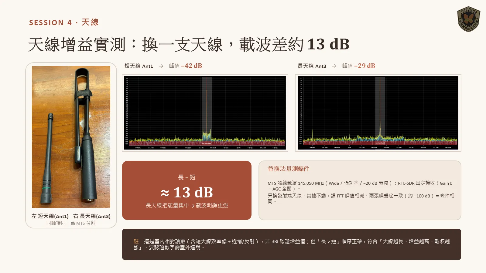
SESSION 4 · 天線 19/54
天線增益實測：換一支天線，載波差約 13 dB
- 短天線 Ant1 → 峰值 −42 dB
- 長天線 Ant3 → 峰值 −29 dB
- 長 − 短 · ≈ 13 dB · 長天線把能量集中 → 載波明顯更強
- 替換法量測條件
- MTS 發純載波 145.050 MHz（Wide／低功率／−20 dB 衰減）；RTL-SDR 固定接收（Gain 0、AGC 全關）。 · 只換發射端天線、其他不動，讀 FFT 峰值相減。兩張噪聲底一致（約 −100 dB）＝條件相同。
- 左 短天線(Ant1) 右 長天線(Ant3) · 同軸接同一台 MTS 發射
- 註 這是室內相對讀數（含短天線效率低＋近場/反射），非 dBi 認證增益值；但「長 > 短」順序正確，符合『天線越長、增益越高、載波越強』。要認證數字需室外遠場。
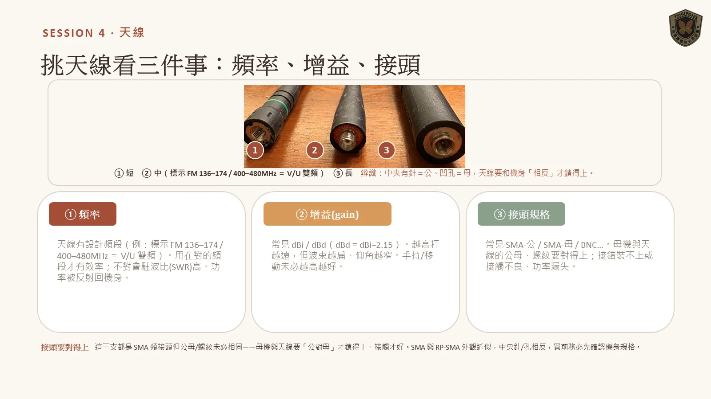
SESSION 4 · 天線 20/54
挑天線看三件事：頻率、增益、接頭
- 1
- 2
- 3
- ① 短 ② 中（標示 FM 136–174 / 400–480MHz ＝ V/U 雙頻） ③ 長 辨識：中央有針＝公、凹孔＝母，天線要和機身「相反」才鎖得上。
- ① 頻率
- ② 增益(gain)
- ③ 接頭規格
- 天線有設計頻段（例：標示 FM 136–174 / 400–480MHz ＝ V/U 雙頻）。用在對的頻段才有效率；不對會駐波比(SWR)高、功率被反射回機身。
- 常見 dBi / dBd（dBd＝dBi−2.15）。越高打越遠，但波束越扁、仰角越窄。手持/移動未必越高越好。
- 常見 SMA-公 / SMA-母 / BNC…。母機與天線的公母、螺紋要對得上；接錯裝不上或接觸不良、功率漏失。
- 接頭要對得上 這三支都是 SMA 類接頭但公母/螺紋未必相同——母機與天線要「公對母」才鎖得上、接觸才好。SMA 與 RP-SMA 外觀近似，中央針/孔相反，買前務必先確認機身規格。
SESSION 5 21/54
寬頻 / 窄頻 W / N
- 面板寫「頻寬」，其實它設的是「訊號最多能佔多寬」的上限
- 破除迷思
- 「面板寫頻寬，就是在設頻寬」 → 設的是寬度的天花板；實際多寬看你多大聲
SESSION 5 · 寬窄頻 22/54
為什麼要有寬 / 窄頻？
- 頻譜不夠用。使用者暴增，主管機關必須在不新增頻譜下擠出更多頻道。
- 要解決的問題
- 把訊號寬度的天花板砍一半（窄頻），頻道間隔就能縮一半，同一段頻譜塞進兩倍頻道。
- 設計原理
- 代價是音質與訊噪比略降；跨單位務必統一 W 或 N，否則一個破音、一個太小聲。
- 現場場景
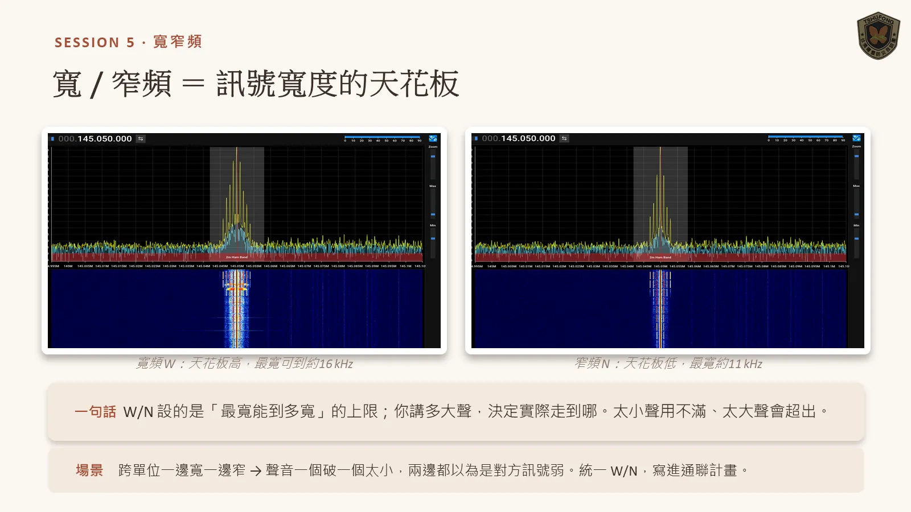
SESSION 5 · 寬窄頻 23/54
寬 / 窄頻 ＝ 訊號寬度的天花板
- 寬頻 W：天花板高，最寬可到約 16 kHz
- 窄頻 N：天花板低，最寬約 11 kHz
- 一句話 W/N 設的是「最寬能到多寬」的上限；你講多大聲，決定實際走到哪。太小聲用不滿、太大聲會超出。
- 場景 跨單位一邊寬一邊窄 → 聲音一個破一個太小，兩邊都以為是對方訊號弱。統一 W/N，寫進通聯計畫。
SESSION 6 24/54
頻道步進 Step
- 從「轉頻率的最小單位」，到「沒協調好就壓到隔壁」
- 破除迷思
- 「步進只是調頻率的方便設定」 → 設錯會叫不到頻率，還會壓到隔壁
SESSION 6 · 步進 25/54
為什麼要有頻道步進？
- 整段頻譜要切成整齊的「頻道格」，大家才停在同樣的位置上、不各停各的。
- 要解決的問題
- 步進＝頻道間隔的跳動單位；設對，才停得上格線、也才不會壓到鄰頻。
- 設計原理
- 叫不到某頻率（步進太大跳過了）、或被鄰頻抱怨干擾 → 都先查步進。
- 現場場景
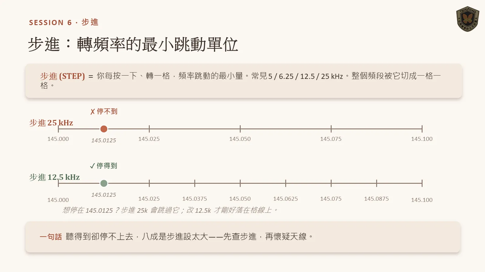
SESSION 6 · 步進 26/54
步進：轉頻率的最小跳動單位
- 步進 (STEP) ＝ 你每按一下、轉一格，頻率跳動的最小量。常見 5 / 6.25 / 12.5 / 25 kHz。整個頻段被它切成一格一格。
- ✗ 停不到
- 步進 25 kHz
- 145.000
- 145.025
- 145.050
- 145.075
- 145.100
- 145.0125
- ✓ 停得到
- 步進 12.5 kHz
- 145.0125
- 145.000
- 145.025
- 145.0375
- 145.050
- 145.0625
- 145.075
- 145.0875
- 145.100
- 想停在 145.0125？步進 25k 會跳過它；改 12.5k 才剛好落在格線上。
- 一句話 聽得到卻停不上去，八成是步進設太大——先查步進，再懷疑天線。
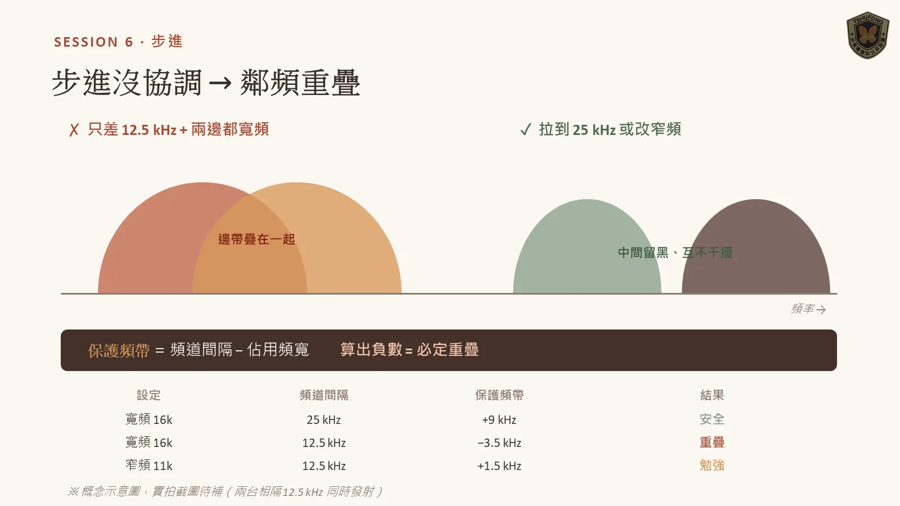
SESSION 6 · 步進 27/54
步進沒協調 → 鄰頻重疊
- ✗ 只差 12.5 kHz + 兩邊都寬頻
- ✓ 拉到 25 kHz 或改窄頻
- 邊帶疊在一起
- 中間留黑、互不干擾
- 頻率 →
- 保護頻帶 ＝ 頻道間隔 − 佔用頻寬 算出負數 = 必定重疊
- 設定
- 頻道間隔
- 保護頻帶
- 結果
- 寬頻 16k
- 25 kHz
- +9 kHz
- 安全
- 寬頻 16k
- 12.5 kHz
- −3.5 kHz
- 重疊
- 窄頻 11k
- 12.5 kHz
- +1.5 kHz
- 勉強
- ※ 概念示意圖，實拍截圖待補（兩台相隔 12.5 kHz 同時發射）
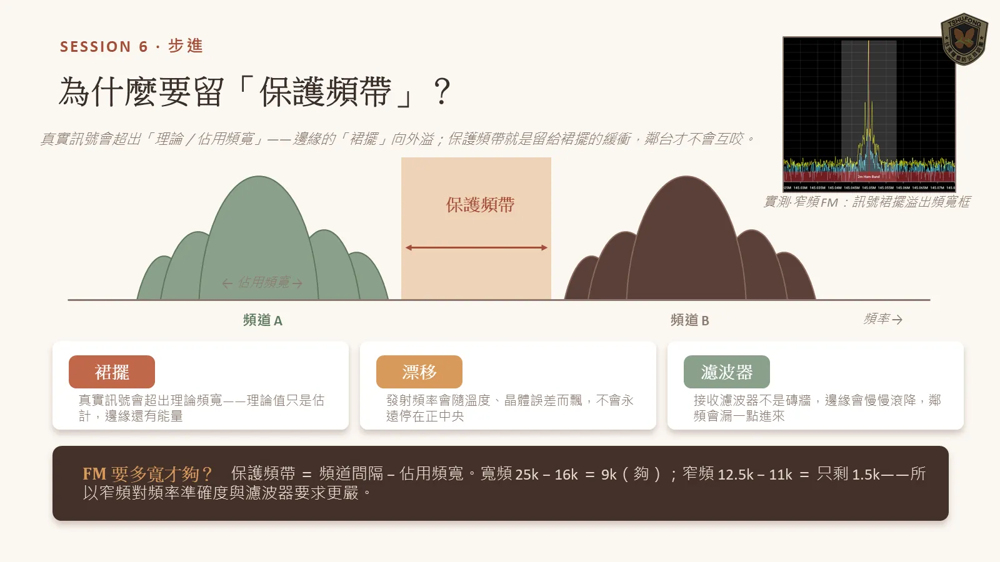
SESSION 6 · 步進 28/54
為什麼要留「保護頻帶」？
- 真實訊號會超出「理論／佔用頻寬」——邊緣的「裙擺」向外溢；保護頻帶就是留給裙擺的緩衝，鄰台才不會互咬。
- 保護頻帶
- 實測·窄頻 FM：訊號裙擺溢出頻寬框
- ← 佔用頻寬 →
- 頻率 →
- 頻道 A
- 頻道 B
- 裙擺
- 漂移
- 濾波器
- 真實訊號會超出理論頻寬——理論值只是估計，邊緣還有能量
- 發射頻率會隨溫度、晶體誤差而飄，不會永遠停在正中央
- 接收濾波器不是磚牆，邊緣會慢慢滾降，鄰頻會漏一點進來
- FM 要多寬才夠？ 保護頻帶 ＝ 頻道間隔 − 佔用頻寬。寬頻 25k − 16k ＝ 9k（夠）；窄頻 12.5k − 11k ＝ 只剩 1.5k——所以窄頻對頻率準確度與濾波器要求更嚴。
動手做 · 分組實作 29/54
調出這個形狀
- 一對無線電、兩種設定，在頻譜上疊出「一寬一窄」——這就是你這組要做出來的畫面。
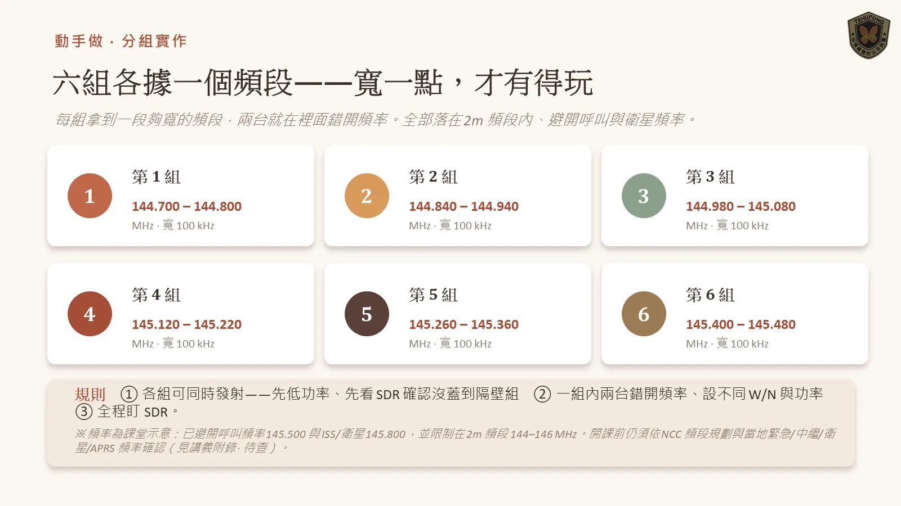
動手做 · 分組實作 30/54
六組各據一個頻段——寬一點，才有得玩
- 每組拿到一段夠寬的頻段，兩台就在裡面錯開頻率。全部落在 2m 頻段內、避開呼叫與衛星頻率。
- 第 1 組
- 第 2 組
- 第 3 組
- 1
- 2
- 3
- 144.700 – 144.800
- 144.840 – 144.940
- 144.980 – 145.080
- MHz · 寬 100 kHz
- MHz · 寬 100 kHz
- MHz · 寬 100 kHz
- 第 4 組
- 第 5 組
- 第 6 組
- 4
- 5
- 6
- 145.120 – 145.220
- 145.260 – 145.360
- 145.400 – 145.480
- MHz · 寬 100 kHz
- MHz · 寬 100 kHz
- MHz · 寬 100 kHz
- 規則 ① 各組可同時發射——先低功率、先看 SDR 確認沒蓋到隔壁組 ② 一組內兩台錯開頻率、設不同 W/N 與功率 ③ 全程盯 SDR。
- ※ 頻率為課堂示意：已避開呼叫頻率 145.500 與 ISS/衛星 145.800，並限制在 2m 頻段 144–146 MHz。開課前仍須依 NCC 頻段規劃與當地緊急/中繼/衛星/APRS 頻率確認（見講義附錄 · 待查）。
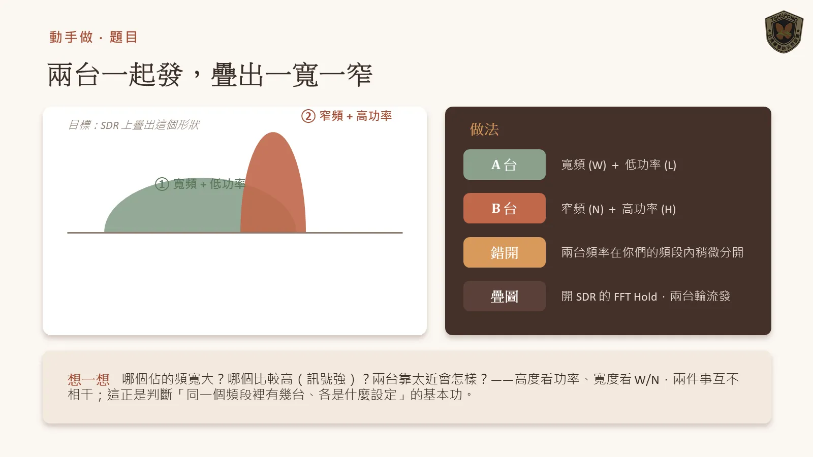
動手做 · 題目 31/54
兩台一起發，疊出一寬一窄
- ② 窄頻 + 高功率
- 做法
- 目標：SDR 上疊出這個形狀
- 寬頻 (W) ＋ 低功率 (L)
- A 台
- ① 寬頻 + 低功率
- 窄頻 (N) ＋ 高功率 (H)
- B 台
- 兩台頻率在你們的頻段內稍微分開
- 錯開
- 開 SDR 的 FFT Hold，兩台輪流發
- 疊圖
- 想一想 哪個佔的頻寬大？哪個比較高（訊號強）？兩台靠太近會怎樣？——高度看功率、寬度看 W/N，兩件事互不相干；這正是判斷「同一個頻段裡有幾台、各是什麼設定」的基本功。
SESSION 7 32/54
亞音 CTCSS
- 重點：亞音不是加密
- 破除迷思
- 「設了亞音＝私人頻道，別人聽不到」 → 它一點都不加密，只關你自己的喇叭
SESSION 7 · 亞音 33/54
為什麼要有亞音（CTCSS）？
- 同一個頻率常要多組人共用。你不想整天聽到別組的通話與雜音。
- 要解決的問題
- 發射端蓋一個「暗號」（次音頻），收端只對暗號開喇叭——這是分群，不是加密。
- 設計原理
- 中繼台要正確亞音才會開；但你講的每句話仍是明語，任何人、任何 SDR 都收得到。
- 現場場景
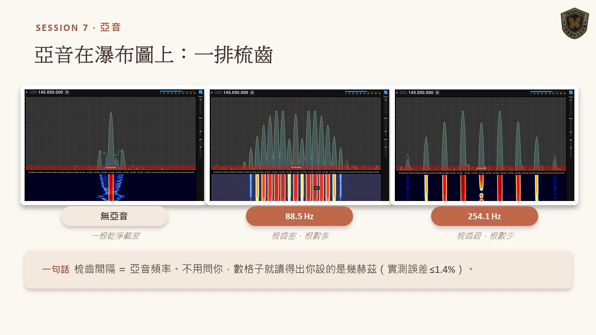
SESSION 7 · 亞音 34/54
亞音在瀑布圖上：一排梳齒
- 無亞音
- 88.5 Hz
- 254.1 Hz
- 一根乾淨載波
- 梳齒密、根數多
- 梳齒疏、根數少
- 一句話 梳齒間隔 ＝ 亞音頻率。不用問你，數格子就讀得出你設的是幾赫茲（實測誤差 ≤1.4%）。
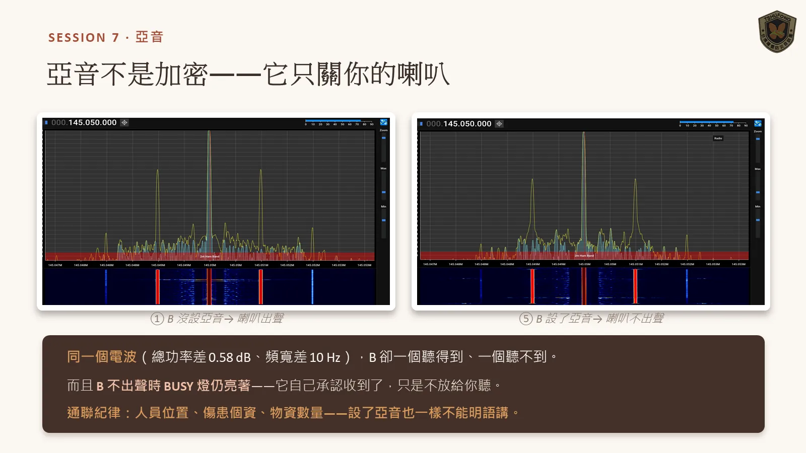
SESSION 7 · 亞音 35/54
亞音不是加密——它只關你的喇叭
- ① B 沒設亞音 → 喇叭出聲
- ⑤ B 設了亞音 → 喇叭不出聲
- 同一個電波（總功率差 0.58 dB、頻寬差 10 Hz），B 卻一個聽得到、一個聽不到。
- 而且 B 不出聲時 BUSY 燈仍亮著——它自己承認收到了，只是不放給你聽。
- 通聯紀律：人員位置、傷患個資、物資數量——設了亞音也一樣不能明語講。
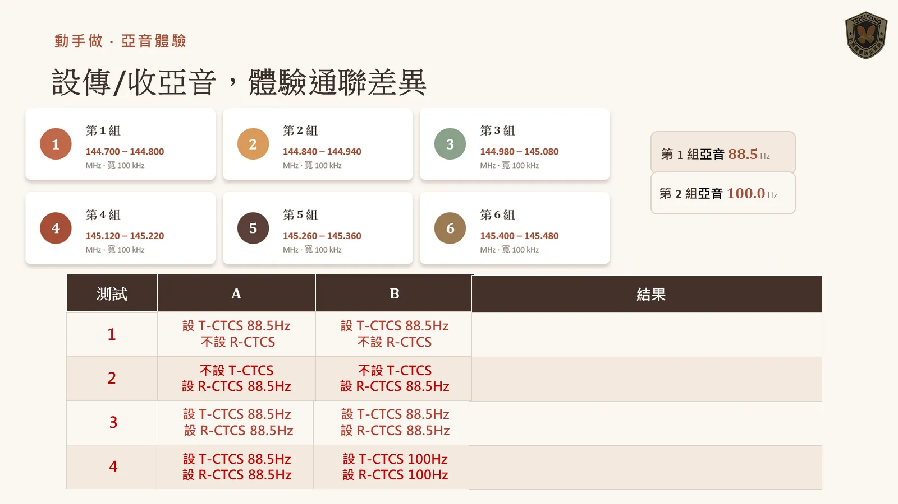
動手做 · 亞音體驗 36/54
設傳/收亞音，體驗通聯差異
- 第 1 組亞音 88.5 Hz
- 第 2 組亞音 100.0 Hz
- 測試
- A
- B
- 結果
- 設 T-CTCS 88.5Hz · 不設 R-CTCS
- 1
- 設 T-CTCS 88.5Hz · 不設 R-CTCS
- 2
- 不設 T-CTCS · 設 R-CTCS 88.5Hz
- 不設 T-CTCS · 設 R-CTCS 88.5Hz
- 3
- 設 T-CTCS 88.5Hz · 設 R-CTCS 88.5Hz
- 設 T-CTCS 88.5Hz · 設 R-CTCS 88.5Hz
- 4
- 設 T-CTCS 88.5Hz · 設 R-CTCS 88.5Hz
- 設 T-CTCS 100Hz · 設 R-CTCS 100Hz
SESSION 8 37/54
Offset 收發分裂
- 破除迷思
- 「offset 改的是我收聽的頻率」 → 不，offset 只在按 PTT 發射時生效；你顯示／收聽的頻率不動
- 已實測 · SDR ±10k 示範
- 重點：中繼台一收一發不同頻。offset 決定「發射」跳去哪——方向(＋/−)＋大小；還要配亞音(CTCSS)才進得了中繼台。
SESSION 8 · Offset 38/54
為什麼要 offset？中繼台一收一發
- 中繼台要「同時」聽你講、又把你的話轉播出去。若收發同頻，它一發就會蓋掉自己正在收的訊號（自我干擾），根本無法運作。
- 要解決的問題
- 讓中繼台「收一個頻率、發另一個頻率」，兩者相差固定的 offset（2m 常見 −600 kHz）。你的機器：顯示／收聽＝中繼台輸出；一按 PTT 自動平移 offset ＝中繼台輸入。offset 只動 TX，不動 RX。
- 設計原理
- 打不進中繼台，先查三件事：頻率（輸出對不對）、offset（方向＋大小）、亞音（CTCSS）。三者缺一不可——只設 offset 數值卻沒設方向（＋/−），機器根本不會平移。
- 現場場景
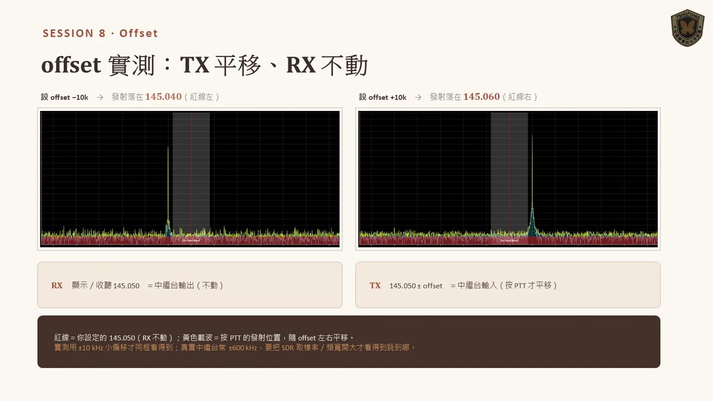
SESSION 8 · Offset 39/54
offset 實測：TX 平移、RX 不動
- 設 offset −10k → 發射落在 145.040（紅線左）
- 設 offset +10k → 發射落在 145.060（紅線右）
- RX 顯示／收聽 145.050 ＝中繼台輸出（不動）
- TX 145.050 ± offset ＝中繼台輸入（按 PTT 才平移）
- 紅線＝你設定的 145.050（RX 不動）；黃色載波＝按 PTT 的發射位置，隨 offset 左右平移。 · 實測用 ±10 kHz 小偏移才同框看得到；真實中繼台常 ±600 kHz，要把 SDR 取樣率／頻寬開大才看得到跳到哪。
想一想 40/54
架一座 2m 中繼台
- 先想清楚
- 最少要設定什麼，才能通話？
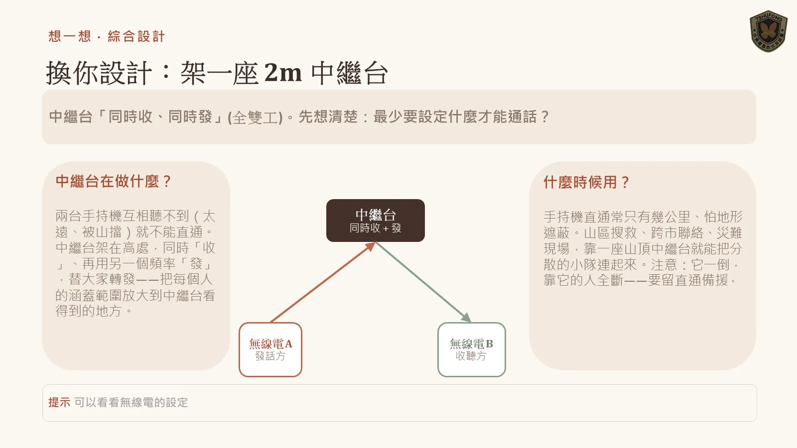
想一想 · 綜合設計 41/54
換你設計：架一座 2m 中繼台
- 中繼台「同時收、同時發」(全雙工)。先想清楚：最少要設定什麼才能通話？
- 中繼台在做什麼？ · 兩台手持機互相聽不到（太遠、被山擋）就不能直通。中繼台架在高處，同時「收」、再用另一個頻率「發」，替大家轉發——把每個人的涵蓋範圍放大到中繼台看得到的地方。
- 什麼時候用？ · 手持機直通常只有幾公里、怕地形遮蔽。山區搜救、跨市聯絡、災難現場，靠一座山頂中繼台就能把分散的小隊連起來。注意：它一倒，靠它的人全斷——要留直通備援。
- 中繼台 · 同時收＋發
- 無線電 A · 發話方
- 無線電 B · 收聽方
- 提示 可以看看無線電的設定
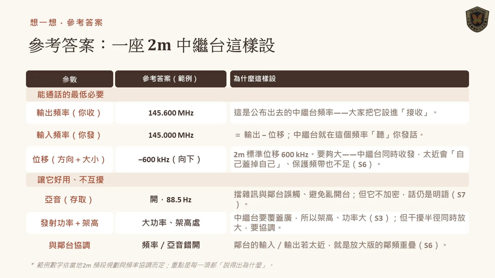
想一想 · 參考答案 42/54
參考答案：一座 2m 中繼台這樣設
- 參數
- 參考答案（範例）
- 為什麼這樣設
- 能通話的最低必要
- 輸出頻率（你收）
- 145.600 MHz
- 這是公布出去的中繼台頻率——大家把它設進「接收」。
- 輸入頻率（你發）
- 145.000 MHz
- ＝ 輸出 − 位移；中繼台就在這個頻率「聽」你發話。
- 位移（方向＋大小）
- −600 kHz（向下）
- 2m 標準位移 600 kHz。要夠大——中繼台同時收發，太近會「自己蓋掉自己」、保護頻帶也不足（S6）。
- 讓它好用、不互擾
- 亞音（存取）
- 開，88.5 Hz
- 擋雜訊與鄰台誤觸、避免亂開台；但它不加密，話仍是明語（S7）。
- 發射功率＋架高
- 大功率、架高處
- 中繼台要覆蓋廣，所以架高、功率大（S3）；但干擾半徑同時放大，要協調。
- 與鄰台協調
- 頻率／亞音錯開
- 鄰台的輸入／輸出若太近，就是放大版的鄰頻重疊（S6）。
- ＊ 範例數字依當地 2m 頻段規劃與頻率協調而定；重點是每一項都「說得出為什麼」。
SESSION 9 43/54
靜噪 Squelch
- 破除迷思
- 「靜噪把訊號關掉了」 → 它只關你的喇叭，電波照舊、別人照收
- 內容準備中 · 尚未實測
- 預告：靜噪、亞音、靜音——三種讓喇叭安靜的機制，沒有一種動得到電波，也沒有一種能保密。
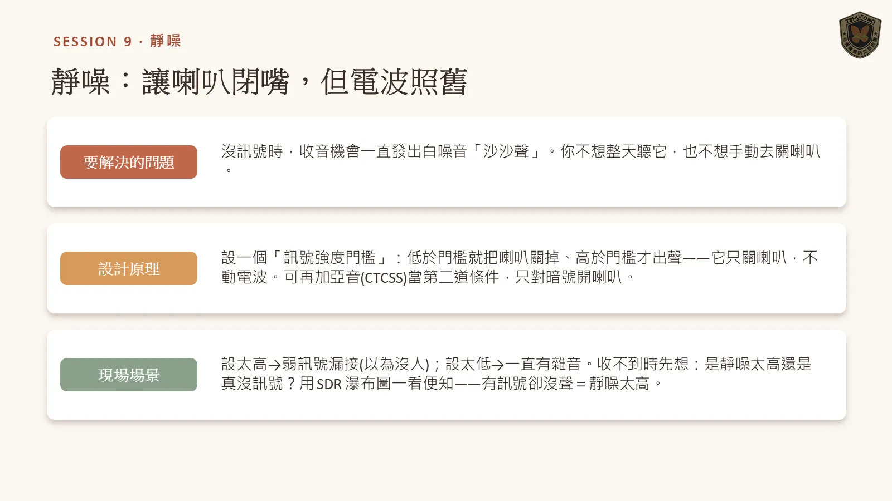
SESSION 9 · 靜噪 44/54
靜噪：讓喇叭閉嘴，但電波照舊
- 沒訊號時，收音機會一直發出白噪音「沙沙聲」。你不想整天聽它，也不想手動去關喇叭。
- 要解決的問題
- 設一個「訊號強度門檻」：低於門檻就把喇叭關掉、高於門檻才出聲——它只關喇叭，不動電波。可再加亞音(CTCSS)當第二道條件，只對暗號開喇叭。
- 設計原理
- 設太高→弱訊號漏接(以為沒人)；設太低→一直有雜音。收不到時先想：是靜噪太高還是真沒訊號？用 SDR 瀑布圖一看便知——有訊號卻沒聲＝靜噪太高。
- 現場場景
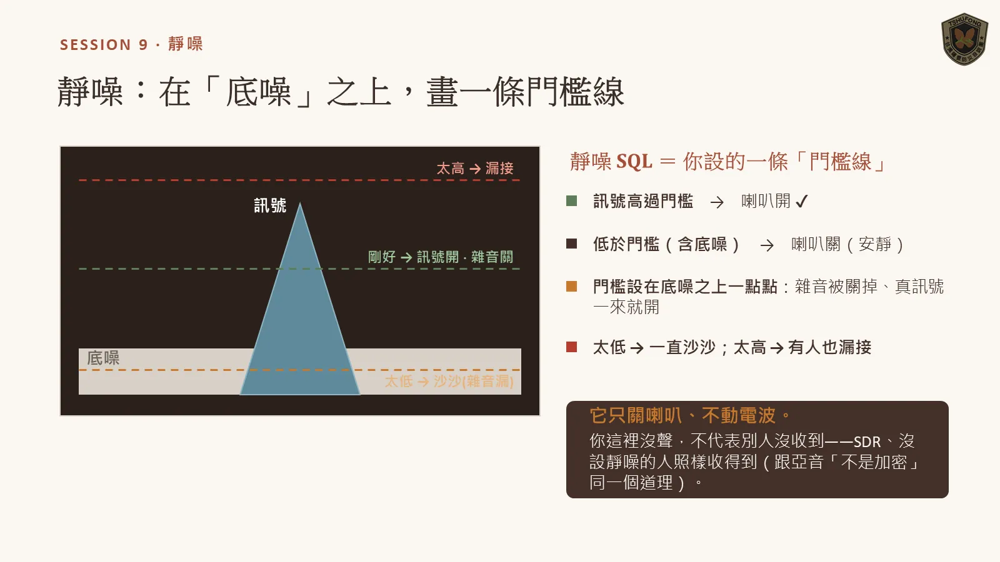
SESSION 9 · 靜噪 45/54
靜噪：在「底噪」之上，畫一條門檻線
- 靜噪 SQL ＝ 你設的一條「門檻線」
- 太高 → 漏接
- 訊號高過門檻 → 喇叭開 ✔
- 訊號
- 低於門檻（含底噪） → 喇叭關（安靜）
- 剛好 → 訊號開 · 雜音關
- 門檻設在底噪之上一點點：雜音被關掉、真訊號一來就開
- 太低 → 一直沙沙；太高 → 有人也漏接
- 底噪
- 太低 → 沙沙(雜音漏)
- 它只關喇叭、不動電波。 · 你這裡沒聲，不代表別人沒收到——SDR、沒設靜噪的人照樣收得到（跟亞音「不是加密」同一個道理）。
動手做 · 靜噪體驗 46/54
調 SQL 找門檻：太低吵、太高漏接（用低功率）
- 各組甲聽、乙發（同頻率）。把 SQL 從 0 慢慢往上轉，看喇叭：一直響 → 只在乙發時響 → 連乙發都不響。弱訊號用低功率 (L)做。
- 測試
- A 的 SQL
- B 發射
- A 喇叭
- 體驗／學到
- ① SQL 0 · （全開）
- 一直沙沙
- 轉到最小
- 沒人發
- 太低＝整天雜音
- ② 調到雜音剛消失
- 安靜
- 慢慢往上轉
- 沒人發
- 這個值＝「門檻」（設在底噪之上）
- 出聲、清楚
- 不動
- 乙近距·正常發
- ③ 維持門檻
- 設對：安靜又收得到
- 聽不到 · （漏接）
- ④ SQL 轉到最高
- 調到最大
- 乙轉低功率 L 發
- 太高＝有人也漏接；SDR／BUSY 仍看得到
- 靜噪＝訊號強度的門檻，只關喇叭、不動電波（沒聲 ≠ 沒收到；SDR／別人照收）。太低一直吵、太高會漏接，門檻設在「底噪之上一點點」最好。 · ⚑ 收不到先分辨：「靜噪太高」還是「真的沒訊號」？按 MONI（監聽）或看 SDR 瀑布圖——有訊號卻沒聲＝靜噪太高。
現場排查 · Troubleshooting 47/54
出問題，怎麼查？
- 用學過的每一層，從最便宜、最常見的先查起
- 口訣
- 用學過的每一層，從最便宜、最常見的先查起
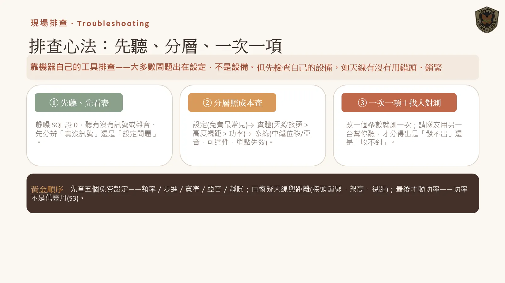
現場排查 · Troubleshooting 48/54
排查心法：先聽、分層、一次一項
- 靠機器自己的工具排查——大多數問題出在設定，不是設備。但先檢查自己的設備，如天線有沒有用錯頭、鎖緊
- ① 先聽、先看表
- ② 分層照成本查
- ③ 一次一項＋找人對測
- 靜噪 SQL 設 0，聽有沒有訊號或雜音，先分辨「真沒訊號」還是「設定問題」。
- 設定(免費最常見)→ 實體(天線接頭＞高度視距＞功率)→ 系統(中繼位移/亞音、可達性、單點失效)。
- 改一個參數就測一次；請隊友用另一台幫你聽，才分得出是「發不出」還是「收不到」。
- 黃金順序 先查五個免費設定——頻率／步進／寬窄／亞音／靜噪；再懷疑天線與距離(接頭鎖緊、架高、視距)；最後才動功率——功率不是萬靈丹(S3)。
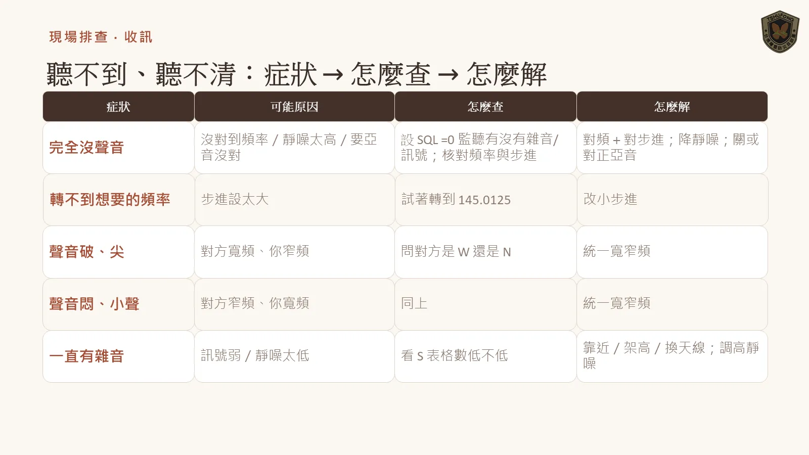
現場排查 · 收訊 49/54
聽不到、聽不清：症狀 → 怎麼查 → 怎麼解
- 症狀
- 可能原因
- 怎麼查
- 怎麼解
- 完全沒聲音
- 沒對到頻率／靜噪太高／要亞音沒對
- 設 SQL =0 監聽有沒有雜音/訊號；核對頻率與步進
- 對頻＋對步進；降靜噪；關或對正亞音
- 轉不到想要的頻率
- 步進設太大
- 試著轉到 145.0125
- 改小步進
- 聲音破、尖
- 對方寬頻、你窄頻
- 問對方是 W 還是 N
- 統一寬窄頻
- 聲音悶、小聲
- 對方窄頻、你寬頻
- 同上
- 統一寬窄頻
- 一直有雜音
- 訊號弱／靜噪太低
- 看 S 表格數低不低
- 靠近／架高／換天線；調高靜噪
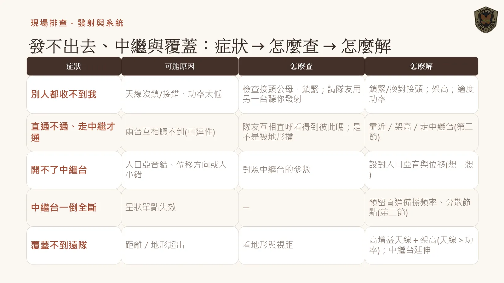
現場排查 · 發射與系統 50/54
發不出去、中繼與覆蓋：症狀 → 怎麼查 → 怎麼解
- 症狀
- 可能原因
- 怎麼查
- 怎麼解
- 別人都收不到我
- 天線沒鎖/接錯、功率太低
- 檢查接頭公母、鎖緊；請隊友用另一台聽你發射
- 鎖緊/換對接頭；架高；適度功率
- 直通不通、走中繼才通
- 兩台互相聽不到(可達性)
- 隊友互相直呼看得到彼此嗎；是不是被地形擋
- 靠近／架高／走中繼台(第二節)
- 開不了中繼台
- 入口亞音錯、位移方向或大小錯
- 對照中繼台的參數
- 設對入口亞音與位移(想一想)
- 中繼台一倒全斷
- 星狀單點失效
- —
- 預留直通備援頻率、分散節點(第二節)
- 覆蓋不到遠隊
- 距離／地形超出
- 看地形與視距
- 高增益天線＋架高(天線＞功率)；中繼台延伸
FINAL · 分組任務 51/54
災難現場通訊計畫
- 用今天學到的每一個參數，替你的小隊做決定
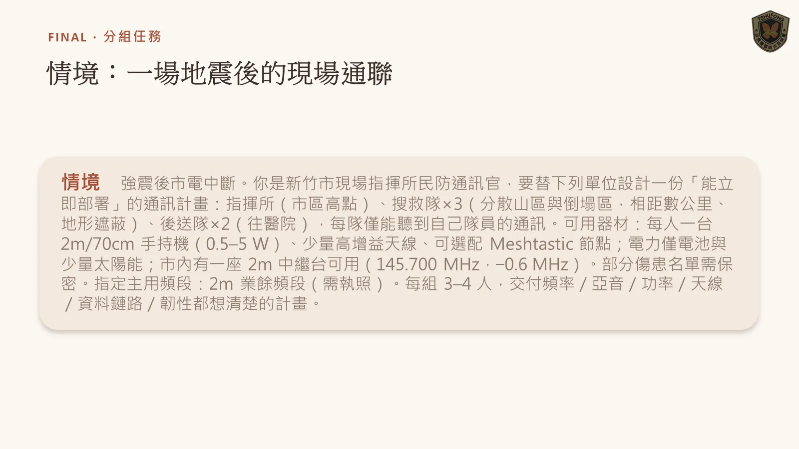
FINAL · 分組任務 52/54
情境：一場地震後的現場通聯
- 情境 強震後市電中斷。你是新竹市現場指揮所民防通訊官，要替下列單位設計一份「能立即部署」的通訊計畫：指揮所（市區高點）、搜救隊×3（分散山區與倒塌區，相距數公里、地形遮蔽）、後送隊×2（往醫院），每隊僅能聽到自己隊員的通訊。可用器材：每人一台 2m/70cm 手持機（0.5–5 W）、少量高增益天線、可選配 Meshtastic 節點；電力僅電池與少量太陽能；市內有一座 2m 中繼台可用（145.700 MHz，−0.6 MHz）。部分傷患名單需保密。指定主用頻段：2m 業餘頻段（需執照）。每組 3–4 人，交付頻率／亞音／功率／天線／資料鏈路／韌性都想清楚的計畫。
FINAL · 分組任務 53/54
你要決定的七件事
- 頻率與步進
- 天線與架設
- 1
- 5
- 各隊用哪些頻率？步進統一才不會互相壓到（S6）
- 要不要高增益、架高？機動隊選型（S4）
- 寬 / 窄頻
- 中繼台
- 2
- 6
- 全體統一 W 還是 N？跨隊會不會不相容（S5）
- 要不要架？輸入／輸出／位移／亞音（想一想）
- 功率
- 資料鏈路與韌性
- 3
- 7
- 哪些用 H、哪些用 L？覆蓋 vs 耗電（S3）
- 語音／位置(Meshtastic)／態勢圖(TAK)；星狀還是網狀備援、單點失效（第二節）
- 限制 ① 保密：業餘禁加密、免執照供應鏈存疑 ② 電力：停電，算功耗與太陽能
- 亞音與紀律
- 4
- 要不要用亞音分隊？哪些話不能明語（S7）
- 交付 每組上台用一句「症狀 → 用哪個參數 → 為什麼」講一個你們預先擋掉的通訊故障。
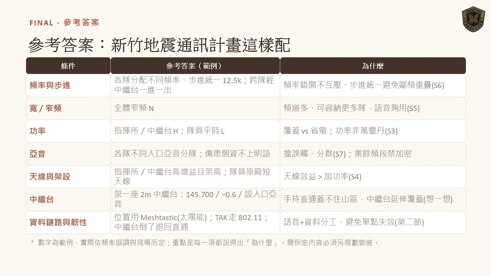
FINAL · 參考答案 54/54
參考答案：新竹地震通訊計畫這樣配
- 條件
- 參考答案（範例）
- 為什麼
- 頻率與步進
- 各隊分配不同頻率、步進統一 12.5k；跨隊經中繼台一進一出
- 頻率錯開不互壓、步進統一避免鄰頻重疊(S6)
- 寬 / 窄頻
- 全體窄頻 N
- 頻道多、可容納更多隊，語音夠用(S5)
- 功率
- 指揮所／中繼台 H；隊員平時 L
- 覆蓋 vs 省電；功率非萬靈丹(S3)
- 亞音
- 各隊不同入口亞音分隊；傷患個資不上明語
- 擋誤觸、分群(S7)；業餘頻段禁加密
- 天線與架設
- 指揮所／中繼台高增益且架高；隊員原廠短天線
- 天線效益 > 加功率(S4)
- 中繼台
- 架一座 2m 中繼台：145.700／−0.6／設入口亞音
- 手持直通蓋不住山區，中繼台延伸覆蓋(想一想)
- 資料鏈路與韌性
- 位置用 Meshtastic(太陽能)；TAK 走 802.11；中繼台倒了退回直通
- 語音+資料分工、避免單點失效(第二節)
- ＊ 數字為範例，實際依頻率協調與現場而定；重點是每一項都說得出「為什麼」。需保密內容必須另規劃管道。